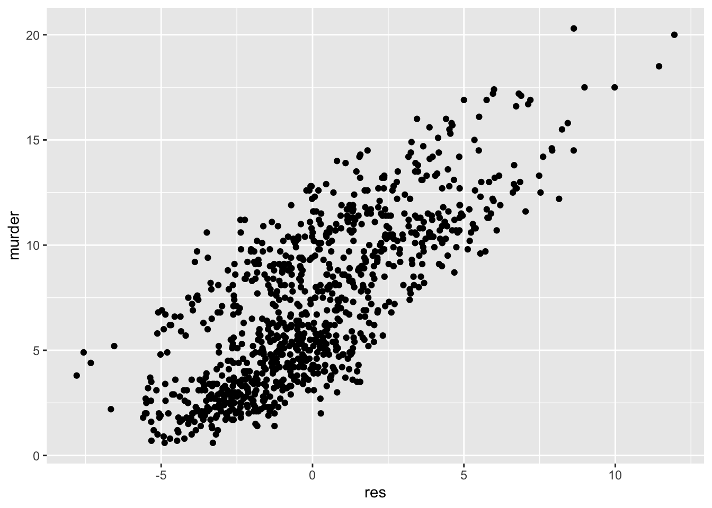
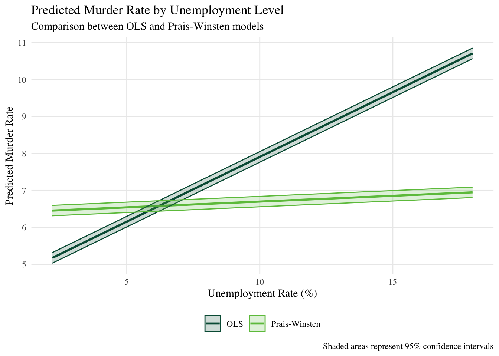
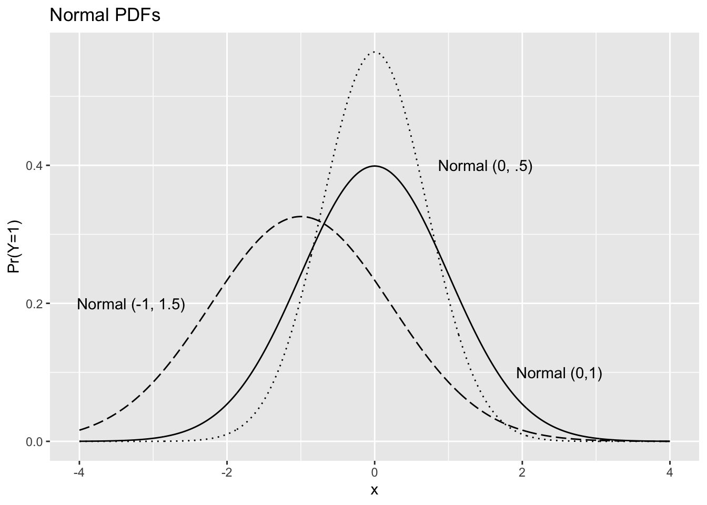
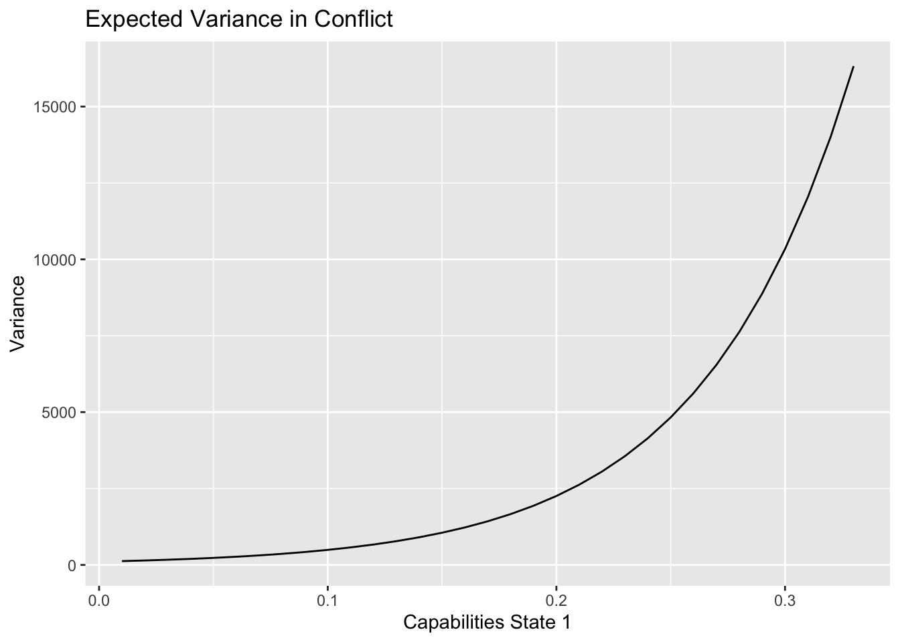

Our discussion of panel data emphasized the space and time dimensions and what the consequences of heterogeneity might be. Those dimensions may also have characteristics that violate the OLS assumptions so we can no longer rely on the BLUE properties of the estimator.
This is a very brief overview of time and variance issues in the OLS model.
Assumptions
Recall these assumptions:
This one holds that cross sections will have identically distributed disturbances.
Let’s call these collectively the i.i.d. assumption.
Time
Uncorrelated Disturbances
The model assumes the errors are not correlated with each other such that:
\[cov(u_t, u_{t-k} = 0)\]
the errors are not correlated across time;
and
\[cov(u_i, u_j = 0)\] the errors are not correlated across units or cross-sections (so across space).
You should be able to see why the first can be an issue in time series data, the second in cross-sectional data, and both in panel data.
Temporal correlation
The nature of temporal correlations varies hugely. The focus of most basic time series analysis is autocorrelation - the error is correlated with itself at some point in the past so that,
\[
cov[u_t,u_{t-k}] \neq 0, \nonumber
\]
Because the errors are not independent, and because we know the rough source of their dependency, we could conceive of \(u_t\) as
where the error at \(t\) is a function of the error at \(t-1\) and \(\rho\) is the coefficient indicating the effect of \(u_{t-1}\) on \(u_t\).
This conceptualization of \(u_t\) is known as a first order autoregressive process or AR(1) because we’ve assumed \(u_t\) is a function of \(u_{t-1}\) rather than some other order or lag of \(u\); note we could just as easily model higher order lags as AR(t) functions.
Also note the inclusion of an error term, \(\varepsilon_t\) satisfying the GM assumptions, so:
You can see the effect of the lagged residuals up to \(s\) on \(u_t\); since \(|\rho| < 1\), then \(|\rho^2| < |\rho|\), and so forth, so the effect of each successive lag (\(t-2, t-3, \ldots, t-s\)) is smaller than the previous lag, eventually decaying to zero.
Variance-Covariance matrix of \(\widehat{\beta}\)
If the errors are correlated, then the variance-covariance matrix is certain to be troubled by that correlation if it is not corrected. In fact,
If \(\rho \neq 0\) the OLS estimator is not BLUE; even though the estimates are unbiased, they are inefficient, so the standard errors are not based on minimum variance in the class of estimators.
Detecting Autocorrelation
We’ll focus on two approaches:
graphical methods.
regression-based methods.
Graphical Methods - using state murder rate data, and the following model:
ms <- lm(murder ~ south + unemp + hsdip + citid + prcapinc, data=states)
Let’s plot the \(y\) variable against the residuals and look for any patterns:
code
states <-read_dta("/Users/dave/Documents/teaching/501/2023/slides/L8_panel/code/USstatedata.dta")ms <-lm(murder ~ south + unemp + hsdip + citid + prcapinc, data=states)#summary(ms)states <- states %>%mutate(res=residuals(ms)) states <- states %>%group_by(id) %>%mutate(res1=dplyr::lag(res,1), res2=dplyr::lag(res,n=2), res3=dplyr::lag(res,n=3))statesxs <- states %>%group_by(statename) %>%summarise(across(c(murder,res, res1, res2, res3), mean, na.rm=TRUE))# ggplot(statesxs, aes(x=res_mean, y=murder_mean))+# geom_point()ggplot(states, aes(x=res, y=murder))+geom_point()

And plot the residuals against lags of the residuals (at \(t-1\), \(t-2\), and \(t-3\)):
Both plots indicate the residuals are not random. The second plot indicates that the residuals are correlated over time since the units are the residuals measured at different lags.
Regression-based detection
Most regression based detection methods are rooted in regressing the residuals on lags of the residuals - call this an “autocorrelation functions.” Write the autocorrelation function:
We can estimate this auxiliary regression using the residuals and their lagged values. The coefficient on \(u_{t-1}\) is our estimate \(\hat{\rho}\). To meet the OLS assumption, \(\hat{\rho}\) should be zero.
Regression based methods
We’ll look at three regression based methods:
Durbin-Watson
Breusch-Godfrey
Wooldridge
All three rely on estimating the OLS model, generating the residuals, and examining the relationships among different lags of the residuals for evidence of correlation.
The DW d is specifically designed for time-series data with exclusively exogenous variables in the model. In other words, models with lagged endogenous variables cannot be appropriately diagnosed using DW’s d. Instead, you should use Durbin and Watson’s h statistic or the BG Lagrange Multiplier test.
This is maybe the simplest regression-based way to detect autocorrelation:
estimate the regression of interest
generate the residuals
regress the residuals on its lag (or lags)
if the coefficient on the lagged residuals is different from zero, some sort of AR process exists.
Durbin-Watson d Statistic
The d statistic tests a variety of null hypotheses, all supposing no AR(1) process exists. It has limited application because of the assumptions on which it’s based:
the regression includes an intercept.
the \(x\) variables are fixed.
the errors are AR(1)
the model has no lagged endogenous variables.
there are no missing observations in the time series.
Beyond these limitations, the statistic has a bizarre distribution for which DW computed upper and lower bounds (outside of which we reject the null of no autocorrelation), but in the middle of which there is a region known as the “indeterminate” zone or “zone of indecision.”
Because the residuals and lagged residuals differ by one observation, they are not equal, but are approximately equal, so we can set them equal and write:
The last term of this equation is \(\rho\) - you can see the numerator is the covariation of the residuals and their lag, and the denominator is the sum squared residuals; this is a correlation coefficient indicating the correlation between \(u_t, u_{t-1}\).
Consistent with the restrictions/assumptions underlying this statistic, note that we’ve estimated \(\rho_{1}\) and so only can test for an AR(1) process. Given our estimate of \(\rho\), we can compute d as
\[
d= 2(1-\hat{\rho}) \nonumber
\]
And since \(\rho\) is bounded by -1 and +1, d must be bounded by 0 and 4.
Here are the criteria for evaluating Durbin-Watson statistics:
Breusch-Godfrey LM Test
The BG test is a more general test because it can account for higher order AR processes (while DW is limited to AR(1)). Moreover, the BG test is simple to compute by hand and has few of the limitations listed above for DW. \alert{Note, this is not appropriate for panel data.
Here’s how it works:
Estimate the OLS regression model.
Generate the residuals.
Regress the residuals, \(\hat{u}_t\), on all the \(x\) variables in the model plus as many lagged values of \(\hat{u}_t\) as you want to test, so; \(\hat{u}_{t-1}\), \(\hat{u}_{t-2}\), \(\hat{u}_{t-3}\), \(\hat{u}_{t-p}\) etc.
In this example, we’re testing 3 lags, so \(p=3\). The regression would be:
Using the \(R^2\) from this auxiliary regression, generate the BG LM statistic as:
\[
(n-p) R^2 ~~ \sim \chi_p^2
\]
The BG is a \(\chi_p^2\) statistic with \(p\) degrees of freedom. The null hypothesis is that \(\rho_1=\rho_2=\rho_3=0\). The BG test not only allows testing for higher order AR processes, but can be used in models with lagged endogenous variables as well.
Wooldridge test for panel data
Wooldridge’s test is simple; note that it’s appropriate for panel data as well.
difference all variables; estimate the differenced regression, clustered by panel, excluding a constant.
generate the residuals from this regression.
regress the residuals on their lag, no constant, clustered by panel.
test the null hypothesis that \(\beta\) on the lag of the residual is equal to -.5.
Correcting AR(1) processes
Most methods for dealing with autocorrelation seek to purge the temporal dependence from the data by transforming the data.
Generalized Least Squares
Generalized Least Squares: OLS on data transformed such that the data satisfy the assumptions of the OLS model.
One common GLS method for dealing with correlated errors is to estimate \(\rho\)-transformed models - two common variants are the Prais-Winsten and Cochrane-Orcutt regressions.
\(\rho\)-transformations
The intuition of \(\rho\)-transformed models is simple:
estimate the regression of interest.
generate the residuals.
estimate \(\hat{\rho}\) as above.
transform the variables by \(\rho\) such that: \[y_t - \rho y_{t-1} = \beta_0(1-\rho)+ \beta_1(x_{1,t} - \rho x_{1,t-1}) \ldots\]
call the new transformed variables \(y^*, x^*\)
estimate the regression \(y^*=\beta^*_0+\beta^*_1(x^*)\)
This particular process is the Cochrane-Orcutt 2-step method. Others are similar (mainly the Prais-Winsten). The estimates are now corrected by the estimated value of \(\rho\). These are also appropriate for panel data where the \(rho\)-transformation is applied to the data for each panel separately.
code
# Read datastates <-read_dta("/Users/dave/Documents/teaching/501/2023/slides/L8_panel/code/USstatedata.dta")# Set state and year as panel identifiersstates_panel <-pdata.frame(states, index =c("id", "year"))# 1. Original OLS model for comparisonms_ols <-lm(murder ~ south + unemp + hsdip + citid + prcapinc, data = states)# 2. Prais-Winsten correction for panel data with panel-specific AR(1) parametersms_pw <-prais_winsten(murder ~ south + unemp + hsdip + citid + prcapinc, data = states,index =c("id", "year"),panelwise =TRUE,rhoweight ="T")# Create tidy dataframe for Prais-Winstenti <-data.frame(term =c("(Intercept)", "south", "unemp", "hsdip", "citid", "prcapinc"),estimate =coef(ms_pw), std.error =coef(summary(ms_pw))[, "Std. Error"],statistic =coef(ms_pw) /coef(summary(ms_pw))[, "Std. Error"],p.value =2*pnorm(abs(coef(ms_pw) /coef(summary(ms_pw))[, "Std. Error"]), lower.tail =FALSE))# Create glance dataframe for Prais-Winstengl <-data.frame(r.squared =summary(ms_pw)$r.squared,adj.r.squared =summary(ms_pw)$adj.r.squared,nobs =length(residuals(ms_pw)),rho = ms_pw$rho[7])# Create custom model objectmod_pw <-list(tidy = ti,glance = gl)class(mod_pw) <-"modelsummary_list"# Create the GOF mapgof_map <-tribble(~raw, ~clean, ~fmt,"nobs", "N", 0,"r.squared", "R²", 3,"adj.r.squared", "Adjusted R²", 3,"rho", "AR(1) coefficient", 3)# Create the model summary with explicit column namesmodelsummary(list("OLS"= ms_ols, "Prais-Winsten"= mod_pw),title ="Comparison of Panel Data Models for Murder Rate",coef_map =c("(Intercept)"="Intercept","south"="South","unemp"="Unemployment","hsdip"="High School Diploma", "citid"="Citizen Ideology","prcapinc"="Per Capita Income" ),gof_map = gof_map,estimate ="{estimate} ({std.error})",statistic =NULL,fmt ="%.4f")
Comparison of Panel Data Models for Murder Rate
OLS
Prais-Winsten
Intercept
23.3561 (2.5171)
23.6465 (4.3671)
South
1.1486 (0.4020)
2.2336 (0.7050)
Unemployment
0.3503 (0.0476)
0.0312 (0.0349)
High School Diploma
-0.2160 (0.0300)
-0.2069 (0.0546)
Citizen Ideology
-0.0834 (0.0073)
-0.0317 (0.0064)
Per Capita Income
0.0001 (0.0000)
0.0000 (0.0000)
N
950
950
R²
0.407
0.361
Adjusted R²
0.404
0.357
AR(1) coefficient
0.818
prediction code
# Get range of unemployment values in the dataunemp_range <-seq(min(states$unemp, na.rm =TRUE), max(states$unemp, na.rm =TRUE), length.out =100)bucolors <-c("#005A43", "#6CC24A", "#A7DA92", "#BDBEBD", "#000000")# Create prediction dataframe for each unemployment valueresults <-data.frame()# For OLS model predictionsfor(u in unemp_range) {# Create prediction dataset with current unemployment value pred_data <- states pred_data$unemp <- u# Get predictions for OLS model pred_ols <-predict(ms_ols, newdata = pred_data)# Calculate summary statistics ols_median <-median(pred_ols, na.rm =TRUE) ols_se <-sd(pred_ols, na.rm =TRUE) /sqrt(sum(!is.na(pred_ols)))# Add to results results <-rbind(results, data.frame(unemp = u,model ="OLS",predicted = ols_median,se = ols_se ))}# For Prais-Winsten model predictions# Manual prediction using coefficients since predict() might not work properlypw_coefs <-coef(ms_pw)# Create a separate dataframe for Prais-Winsten predictionspw_results <-data.frame()for(u in unemp_range) {# For each unemployment value, calculate predictions for all observations pred_data <- states pred_data$unemp <- u# Manual prediction pw_preds <- pw_coefs["(Intercept)"] + pw_coefs["south"] * pred_data$south + pw_coefs["unemp"] * pred_data$unemp + pw_coefs["hsdip"] * pred_data$hsdip + pw_coefs["citid"] * pred_data$citid + pw_coefs["prcapinc"] * pred_data$prcapinc# Calculate summary statistics pw_median <-median(pw_preds, na.rm =TRUE) pw_se <-sd(pw_preds, na.rm =TRUE) /sqrt(sum(!is.na(pw_preds)))# Add to results pw_results <-rbind(pw_results, data.frame(unemp = u,model ="Prais-Winsten",predicted = pw_median,se = pw_se ))}# Combine both sets of resultsresults <-rbind(results, pw_results)# Calculate confidence intervals (95%)results$lower <- results$predicted -1.96* results$seresults$upper <- results$predicted +1.96* results$se# Plot the predictions from both models with custom colorsggplot(results, aes(x = unemp, y = predicted, color = model)) +geom_line(size =1) +geom_ribbon(aes(ymin = lower, ymax = upper, fill = model), alpha =0.2) +labs(title ="Predicted Murder Rate by Unemployment Level",subtitle ="Comparison between OLS and Prais-Winsten models",x ="Unemployment Rate (%)",y ="Predicted Murder Rate",caption ="Shaded areas represent 95% confidence intervals") +theme_minimal() +scale_color_manual(values = bucolors[1:2]) +# Use first two BU colors for linesscale_fill_manual(values = bucolors[1:2]) +# Match fill colors to line colorstheme(legend.position ="bottom",legend.title =element_blank(),panel.grid.minor =element_blank(),text =element_text(family ="serif"))

Dynamic Models
Lagging \(y_t\) and including it on the right hand side of the regression equation can ameliorate autocorrelation, but it changes the interpretation of the coefficients (all of them).
Lagging \(y_t\) is powerful - it generally is a poor choice for dealing with autocorrelation, but a great choice for estimating long term effects - these are known as dynamic models.
Lagging \(x\) variables is also a great choice if theory implies the effect of \(x\) is spread over time, and accumulates in some fashion - these models are known as distributed lag models.
Dynamic models allow us to examine the long-term effects of changes in \(x\) on \(y_t\). The equation we estimate is
where the first term estimates the “memory” in the \(y\)-series. That is, it measures how much the present value of \(y\) is a function of remembering the value of \(y\) at \(t-1\). Thinking of \(-1 <\gamma< 1\), as \(|\gamma|\) increases, so does memory.
What does it mean for these lag-models to be dynamic? In the OLS setting, \(x\) has a \(\beta\) effect on \(y\). In this setting, if \(x_t\) has a \(\beta\) effect on \(y_t\), and if \(\gamma \neq 0\), then \(x_t\) also has some effect on \(y_{t+1}\). In other words, the determinants of \(y\) also exhibit a sort of memory-like, accumulating effect on future values of \(y\).
What these models permit is measurement of short term effects - \(\beta_k\); and long term effects \(\frac{\beta_k}{1-\gamma}\).
Why not use lags of \(y\) to deal with autocorrelation? The AR problem is that \(u_t\) is correlated with \(u_{t-1}\). In the dynamic setting, if these observations on the error are correlated, they must also be correlated with \(y_{t-1}\) - this is a big problem because now, one of the regressors is correlated with \(u\) - an endogeneity-like problem. Whereas AR usually causes inefficiency alone, in the dynamic model it also produces biased estimates.
For this reason, it’s inadvisable to use a lag strategy to deal with AR. It’s also advisable to test for AR in dynamic models, and to use AR methods (like Prais-Winsten) to deal with AR problems in dynamic models.
Variance
The OLS model assumes the errors are identically distributed, again, part of i.i.d.:
which means that the variance of the residuals, given the \(X\) variables, is a constant, \(\sigma^2\). What would make this fail?
Suppose we’re modeling individual consumer spending on luxury items like sports cars, speed boats, golden toilets, and vacation homes. One of the main predictors of luxury item purchases is income; we’d expect as income increases, so does spending on luxury items.
Notice this prediction is about the mean of the \(y\) variable - the expected value (predicted mean) of \(y\) will increase with income. But what if the variance of spending on luxury items also increases with income? For simplicity, think about two income groups.
low income: expected mean spending is low; as a group they will behave very uniformly, spending very little on luxury items.
high income: expected mean spending is high; as a group they will not behave uniformly. Some will spend lavishly on gold toilets and the like (Donald Trump), while others will shop at Walmart (Warren Buffett).
The OLS model \(\text{luxury spending} = \beta_0 + \beta_1\text{income}\) will likely produce a positive, significant estimate for \(\beta_1\) indicating the mean of spending increases with income. But because the variance is different between the two groups (or actually, the variance is increasing with income), the OLS model will be inefficient, so the standard errors will be wrong.
Moreover, notice that we’re missing an interesting part of the story - with resources comes choice, and with choice comes variance in behavior.
Variance is not a nuisance
When we only develop stories about mean behavior, we neglect interesting stories about variance. In many of the phenomena we study, we should consider stories about uniformity of behavior and the sources of that uniformity - these are stories about variance.
What is non constant variance
Nonconstant variance - subgroups in the data have different error variances:
those with large variances contain less information.
those with small variances contain more information.
Consider how this influences our measures of uncertainty.
Thinking of non constant variance in terms of explanatory variables, lower values of \(x\) explain \(y\) well; higher values of \(x\) do not explain as well.
Why does it happen?
built-in limits on behavior - the number of responses in \(y\) is related to the variability in \(y\), and therefore in \(\epsilon\). E.g., as income increases, so does mean spending and variability in spending. As income declines, spending declines and variability is limited by the low level. E.g. successful coups - as the number of coups increases, the variance in coup outcomes will also increase.
training or learning - individuals better at a task will have smaller variance than novices. Major league hitters will have smaller variances than minor leaguers; grad students will have large variances in publishing out comes than faculty.
data issues - different collection rules (e.g. MIDs); aggregation.
What to do?
While most discussions of heteroskedasticity focus on diagnosis and correction, my view is that the possibility (or probability) the variance is not constant is something on which to theorize ex ante.
Visualizing variance
code
xb <-runif(1000, min=-4, max=4)pdf1 <-dnorm(xb, mean=0, sd=1)pdf2 <-dnorm(xb, mean=0, sd=sqrt(.5))pdf3 <-dnorm(xb, mean=-1, sd=sqrt(1.5))pdf4 <-dnorm(xb)df <-data.frame(xb, pdf1, pdf2, pdf3, pdf4)ggplot(data=df, aes(x=xb, y=pdf1)) +geom_line() +geom_line(aes(y=pdf2), linetype="dotted") +geom_line(aes(y=pdf3), linetype="longdash" ) +annotate("text", x =2.5, y = .1, label ="Normal (0,1)") +annotate("text", x =1.5, y = .4, label ="Normal (0, .5)") +annotate("text", x =-3.3, y = .2, label ="Normal (-1, 1.5)") +labs(y="Pr(Y=1)", x="x") +ggtitle("Normal PDFs")

Variance of \(\epsilon\)
The variance of \(\epsilon\) in OLS and in virtually all ML models can be thought of like this:
\[
var(\epsilon_i)=var(\epsilon_j) \forall i,j \ldots n \nonumber
\]
This is explicitly why we write the variance of the errors without a subscript - var(\(\epsilon\)) - it is constant across all \(i\).
Put slightly differently, the distribution of \(\epsilon\) is the same for all \(i\). This is true in the first panel below, but not the second. In the lower panel, you can see the variance of the residuals is correlated with \(x\), increasing as \(x\) increases.
It’s pretty easy to see that this last estimate of the variance of \(\hat{\beta}\) is not equivalent to the one above it, so the variance of \(\hat{\beta}\) and thus the standard error of \(\hat{\beta}\) are no longer “best.” The standard errors are wrong, but we don’t generally know if they’re too big or too small. Regardless, our inferences are under threat.
Detection
graph residuals against \(x\), against \(\hat{y}\)
where we’re really testing the null hypothesis that the \(X\) variables are jointly insignificant. If the auxiliary regression \(u_i^2\) on all the \(X\)s produces coefficients all equal to zero, then the squared residuals are not a function of the \(X\)s. If this is the case, we cannot reject the null that all the coefficients are equal to zero, the null of homoskedasticity.
The LM statistic is computed using the same information, but is not F-distributed - it’s distributed \(\chi^2_{k}\) where \(k\) is the degrees of freedom.
\[
LM \chi^2_{k} = n \cdot R^2_{\hat{u_i^2}} \nonumber
\]
If we reject the null hypothesis of homoskedasticity, we might want to take some corrective measures to account for the likelihood the variance in the error term is not constant.
Solutions
Compute robust standard errors.
Change functional forms - often, logging the variables reduces the nonconstancy in the variance for about the same reasons it ropes-in outliers.
Respecify the model - if relevant variables are excluded from the model, it may exacerbate the extent to which the error variance is nonconstant. Expect it! (it’s not the Spanish Inquisition).
Transform the data by weighting to account for the nonconstant variance.
Estimate a model where we can examine the effects of variables on the variance.
Robust Standard Errors
Building on earlier work by Friedhelm Eicker and Peter Huber, White (1980) showed that it’s actually pretty simple to correct this problem, effectively to correct the variance (and standard error) of \(\beta\) by using the residuals from the regression of \(y\) on \(X\) - in the bivariate case,
where we sum the residuals from the regression of \(x_j\) on the other independent variables multiplied by \(u_i^2\), the residuals from the original regression, and divide by the sum squared residual from this auxiliary regression.
This technique (which has been derived by several different econometricians including those named above) can be written mathematically in several different ways and computed in least squares or in maximum likelihood. It is probably most commonly known either as the White or White-Huber or Robust variance estimator.
Panel data
The units in panel data can be significant sources of non constant variance. After all, the units surely will vary on any number of dimensions we model in the \(X\) variables; it’s not hard to imagine that the conditional variances will also be different across those cross-sections. Robust standard errors are a good choice for dealing with this problem in panel data - it’s very common to see robust standard errors in panel data models.
You’ll often see the term “clustered” used in the context of robust standard errors. The difference here lies in where you assume the heterskedasticity lies. Robust standard errors account for variance across all observations; clustered robust standard errors account for variance within panels (or whatever you cluster on). The computation is the same, and both are “robust” to nonconstant variance.
You should also note Stock and Watson (2008) show that robust (non-clustered) standard errors are not valid with fixed effects - if you have a fixed effects model, cluster on panels.
In R, compute robust/clustered standard errors using the “sandwich” library (the forumula for the Huber-White standard errors resembles a sandwich if you look at it long enough). You can add these new standard errors to your model output and generate appropriate tests (e.g. t-tests for the linear model) using “coeftest” in the “lmtest” library.
Weighting (WLS)
Another alternative is GLS, specifically “Weighted Least Squares”:
The intuition is simple - weight estimation by the values of the variable(s) that we think is (are) associated with nonconstant error variance. In effect, dividing the entire estimating equation by \(x\) will also weight the estimated variance of the error term, and thus return the model to homoskedasticity (assuming that variable is the sole source of nonconstant variance). We would benefit from doing this because we believe there are two types of cases in the data:
cases with larger variances in \(y\) due to \(x\) contain less precise information.
cases with smaller variances in \(y\) due to \(x\) contain more precise information.
Ideally, what we would like to do is produce constant-variance residuals based on these differences so that their variances are equal.
Suppose we could divide both sides of our model by \(\sigma_i\) (if we knew it), the standard deviation of the residual, so
This weights each individual case by the standard deviation of its residual, so those cases with larger variances (and standard deviations) are weighted to count less, those with smaller variances are weighted to count more. And the variance of the error term itself is now:
the variance of the error term is proportional to \(X_i\), so we can divide each side of the equation by \(X_i\) to transform the data, estimate our OLS model, and no longer violate the assumption the error variance is constant. Neat, eh?
Modeling Variance
Variance is not a nuiscance - it’s a feature of the data that we should theorize about. This is a potentially rich part of our literature largely neglected. Variance models in general do the following:
test hypotheses about mean differences in \(y\) given \(X\). This is the usual enterprise, and such hypotheses are about how the mean of \(y\) increases/decreases given a change in \(x\).
test hypotheses about variance differences in \(y\) given \(X\). This is a less common enterprise, and such hypotheses are about how the variance of \(y\) increases/decreases given a change in \(x\).
Thinking of the income and luxary spending example, we have hypotheses on both the mean and the variance of spending given changes in income.
Variance model example
Here’s an example in the international relations literature motivated by economic models of resources and spending. The international conflict literature has a couple of competing views on how capabilities shape the chances of conflict - note, these are claims about how capabilities shape the mean levels of conflict. Clark, Nordstrom, and Reed (2008) argues conflict choices arise as a function of capabilities because such resources make conflict possible, and permit discretion over if/when to engage in conflict.1
In other words, capabilities might increase the mean level of conflict, but they also influence the variance in when and whether states choose conflict. States without resources have few choices, and will choose military conflict less often then resource rich states - they’ll do so uniformly because of their resource constraint. States with plenty of resources will choose conflict more often because they can, but will do so more variantly or more diffusely.
So we have two hypotheses regarding how capabilities shape conflict:
capabilities increase the mean level of conflict.
capabilities increase the variance in conflict.
The model
The variance model is two equations, one anticipating \(X\) variables’ effects on the mean, the other anticipating \(X\) variables’ effects on the variance. It’s usually estimated using ML. The model below uses aggregated dyadic event data over the period 1948-1978. The \(y\) variable is the number of conflictual events the pair engages in during a year. The \(X\) variables are the capabilities of the each state in the dyad, the lower polity score in the pair, distance between the states in the dyad, whether they’re allies, and the aggregate level of cooperationt in the dyad year.
First, let’s look at the constant variance model - i.e., the OLS model only testing hypotheses about the mean level of conflict.
Call: dglm(formula = SUMconf ~ cap_1 + cap_2 + demlow + ally + lndist +
SUMcoop, dformula = ~1 + cap_1 + cap_2, data = sub)
Mean Coefficients:
Estimate Std. Error t value Pr(>|t|)
(Intercept) 0.13765851 0.45000904 0.3059017 7.596831e-01
cap_1 15.21375136 3.33231521 4.5655199 5.015517e-06
cap_2 13.13900439 1.53838801 8.5407611 1.438125e-17
demlow -0.07717211 0.03026943 -2.5495070 1.079574e-02
ally -1.87046157 0.29380348 -6.3663697 1.982284e-10
lndist 0.13122354 0.05179661 2.5334388 1.130335e-02
SUMcoop 0.19237400 0.01013310 18.9847192 1.363534e-79
(Dispersion Parameters for gaussian family estimated as below )
Scaled Null Deviance: 18541.27 on 18032 degrees of freedom
Scaled Residual Deviance: 18032.99 on 18026 degrees of freedom
Dispersion Coefficients:
Estimate Std. Error z value Pr(>|z|)
(Intercept) 4.598776 0.01940801 236.95244 0.000000e+00
cap_1 15.227604 0.14596388 104.32446 0.000000e+00
cap_2 3.060046 0.14721074 20.78684 5.693915e-96
(Dispersion parameter for Gamma family taken to be 2 )
Scaled Null Deviance: 76876.86 on 18032 degrees of freedom
Scaled Residual Deviance: 68133.7 on 18030 degrees of freedom
Minus Twice the Log-Likelihood: 155219.4
Number of Alternating Iterations: 33
Let’s look at predictions just from the variance vector. Since the model is linear, the likelihood function is normal with variance \(\sigma^2\) parameterized as a set of \(X\) variables (in this case, capabilities and a constant). The predictions are just the variance of the normal, so \(exp(X\beta)\).
code
# coefficientsc <-data.frame(coef(mv3))v <-data.frame(coef(mv3$dispersion.fit))# at mean predictionsvpreds <-data.frame(intercept =1 , cap_1=seq(.01, .33, .01), cap_2=.025 )preds <-exp(as.matrix(vpreds)%*%as.matrix(v))#plotggplot(data=cbind(vpreds, preds), aes(x=cap_1, y=preds)) +geom_line() +labs(x="Capabilities State 1", y="Variance") +ggtitle("Expected Variance in Conflict")

Consistent with the coefficients in the variance vector, increases in capabilities increase the predicted variance in conflict behavior. States with greater capacity engage in more conflict (higher mean levels, per hypothesis one), and do so more variably (higher variance, per hypothesis two).
Aside on Measurement
Be clear what you’re measuring.
References
Clark, David H., Timothy Nordstrom, and William Reed. 2008. “Substitution Is in the Variance: Resources and Foreign Policy Choice.”American Journal of Political Science 52 (4): 763–73.
Stock, James H, and Mark W Watson. 2008. “Heteroskedasticity-Robust Standard Errors for Fixed Effects Panel Data Regression.”Econometrica 76 (1): 155–74.
White, Halbert. 1980. “A Heteroskedasticity-Consistent Covariance Matrix Estimator and a Direct Test for Heteroskedasticity.”Econometrica: Journal of the Econometric Society, 817–38.
They argue the same is true of cooperative behavior, and model a system of equations with variance functions. This is a single-equation version of the model they present.↩︎